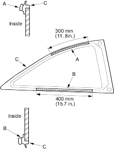
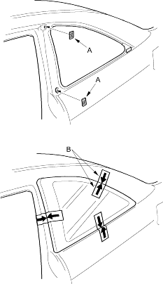

- If the old quarter glass is to be reinstalled (and either clip is broken off the moulding), apply a light coat of primer (C-100, or equivalent), then apply butyl tapes (A) and (B) to the moulding (C) as shown:
- Be careful not to touch the quarter glass where adhesive will be applied.
- Do not peel the separator off the butyl tapes.

- If the new quarter glass is to be installed, glue the fastener (A) to the body:
- Be sure the fastener lines up with the alignment marks (B).
- If the old quarter glass is to be reinstalled (and either clip is broken off the moulding), seal the body holes with pieces of urethane tape (A). Then set the quarter glass upright in the opening and make alignment marks (B) across the quarter glass and body with a grease pencil at the stet points shown. Be careful not to touch the quarter glass where adhesive will be applied.

- Remove the quarter glass.